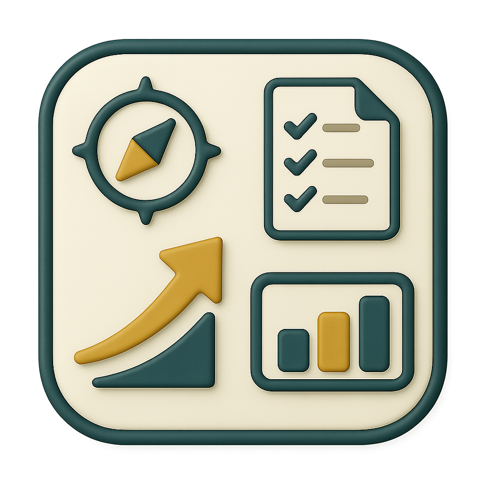
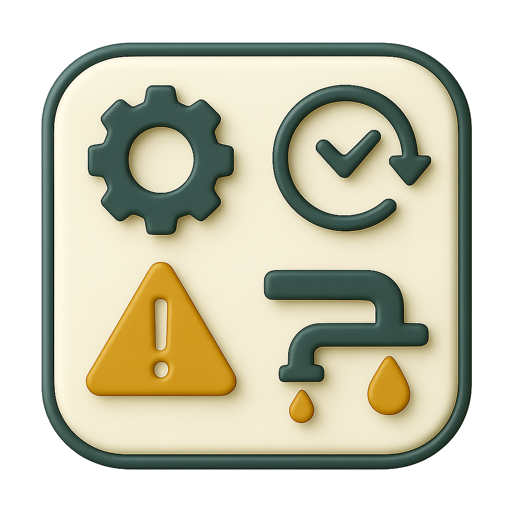
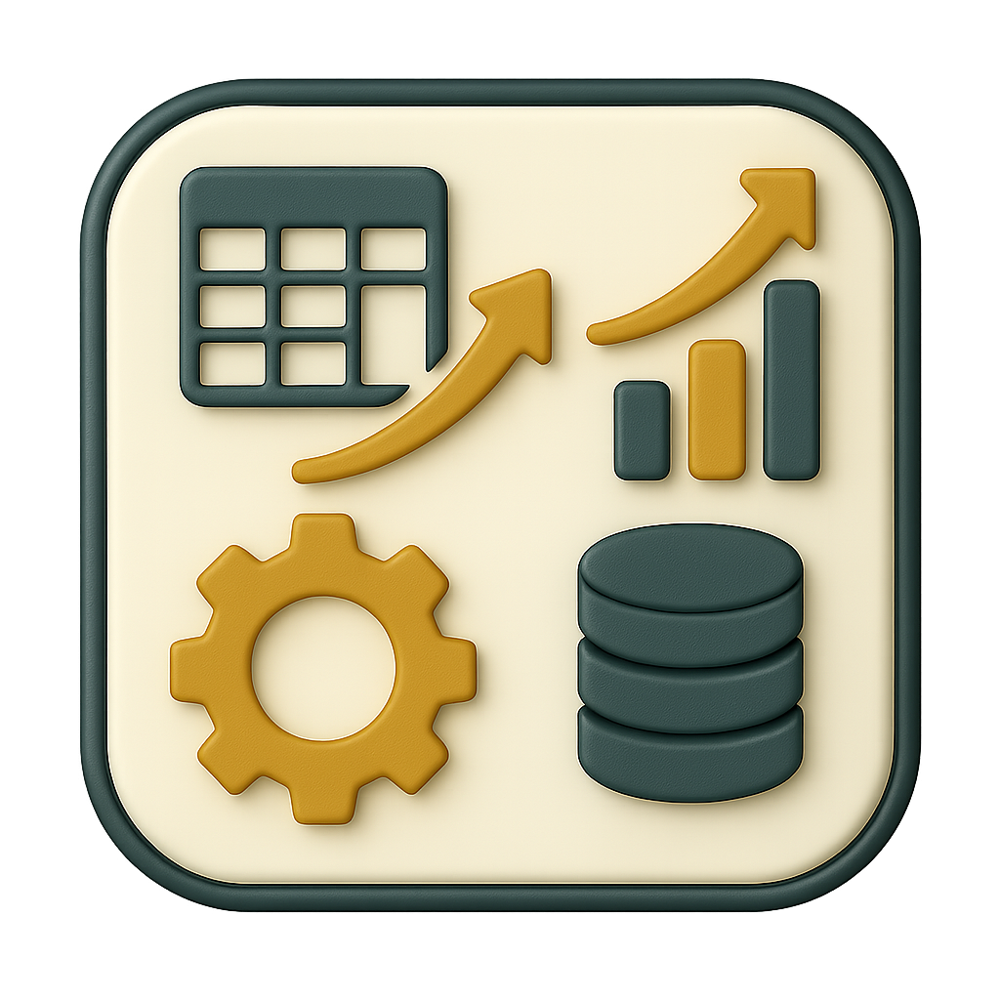
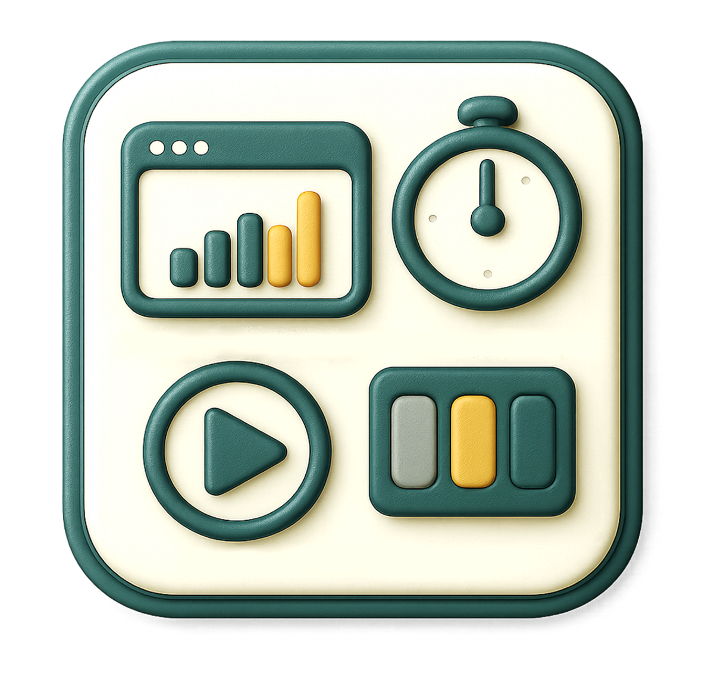
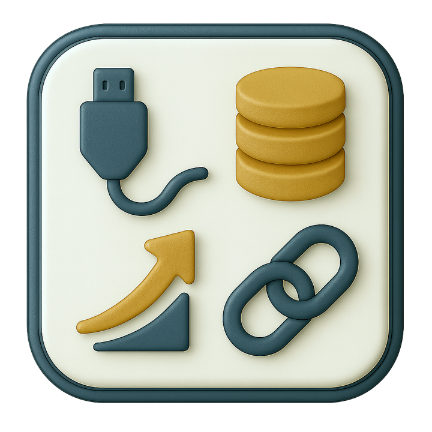
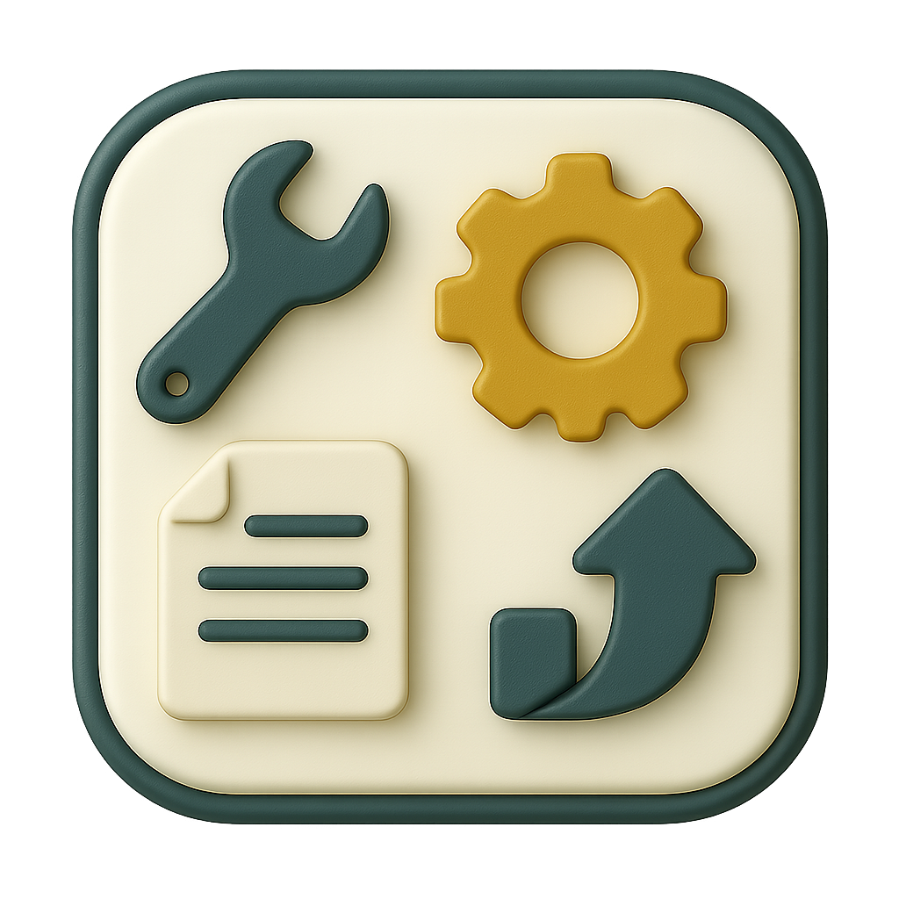
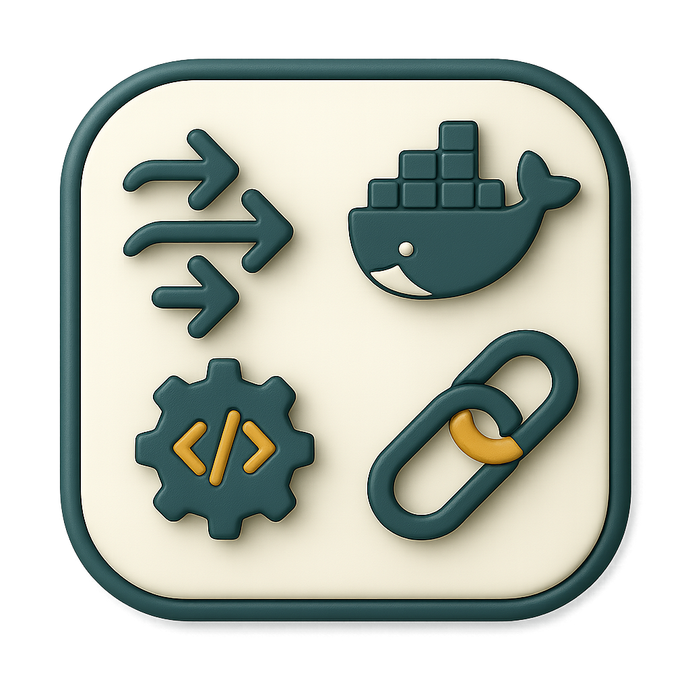
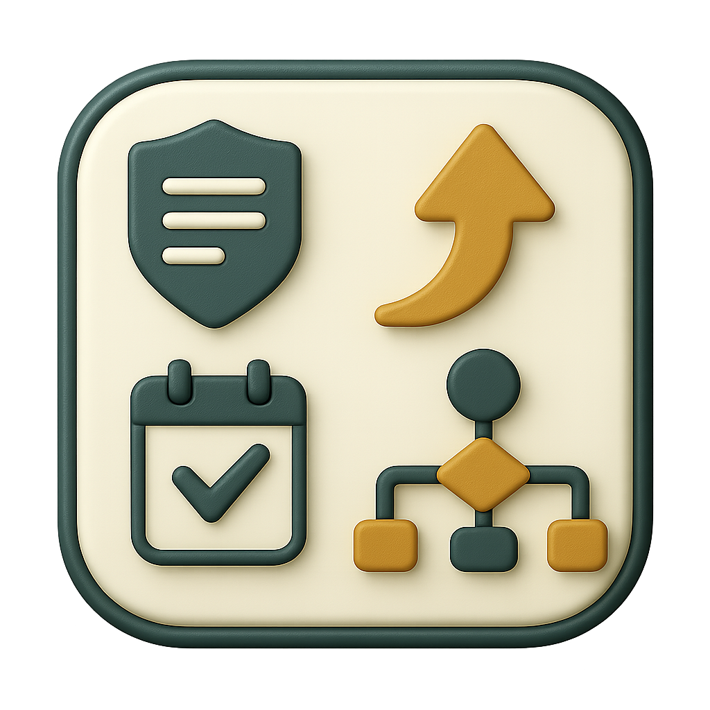

PMO / AMOA light
Cadrage simple, jalons, suivi des risques, CR courts.
- Backlog priorisé (lot 1 utile)
- Rituels courts & décisions
- Visibilité sponsors
Renfort modulable pour cadrer, rendre lisible et délivrer sans complexité inutile.
Interventions en autonomie (PMO/AMOA light, KPI, dataviz, automatisations légères) ou en co-intervention avec vos leads sur les chantiers plus lourds.
Certaines missions sont réalisées en autonomie (PMO/AMOA light, KPI/dataviz, automatisations légères). D’autres se font en co-intervention avec vos experts (lead data, IT, DPO) pour l’architecture, la sécurité avancée ou des pipelines complexes.
Cadrage simple, jalons, suivi des risques, CR courts.

Tenir la roadmap et la priorisation avec votre lead.

CSV/API → Python/SQL → planification (GH Actions/cron).

Du tableur vers une base claire (PostgreSQL/MySQL).
RBAC/RLS de base, périmètres et partages conformes.
Objectif : sécuriser un dispositif lisible et fiable, exploitable par vos équipes projet et vos métiers.
Le parcours avance par étapes simples : compréhension des besoins, structuration des chiffres,
définition des bons indicateurs et mise en visibilité dans des tableaux de bord clairs.
Le dispositif est évolutif et s’adapte à votre contexte (outils existants, priorités, moyens),
avec l’ambition de choisir la solution la plus pertinente et de faire évoluer progressivement les usages,
sans complexité inutile.
Comprendre votre activité et vos priorités.

POC ciblé pour démontrer l’intérêt.
Cadre, jalons, reporting.
Cap, priorisation, feuille de route.

Rassembler vos données en une base fiable.
Organiser et fiabiliser.
Mêmes définitions pour tous.
Vues claires orientées action.
Données à jour sans reporting manuel.
Accès maîtrisés, cadre RGPD.
Du tableur vers une base durable.
Données accessibles aux équipes.

Corrections & améliorations légères.
Tester, ajuster, ancrer les usages.
Prise en main guidée.
Socle technique éprouvé pour traiter, visualiser et automatiser les flux, avec une approche projet claire et transférable. Voir la stack détaillée.


Méthode simple pour passer vite de la compréhension à l’action et fiabiliser les décisions. Version complète.
Formats : régie (TJM) ou forfait par lots. Remote prioritaire, on-site possible selon contexte.
Phase d’essai : 1–2 itérations pour valider notre mode de travail (pipeline léger + mini-dashboard + fiches KPI).